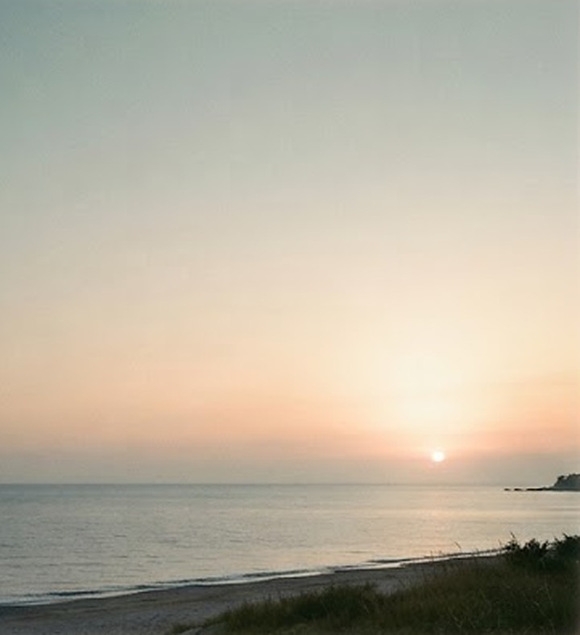
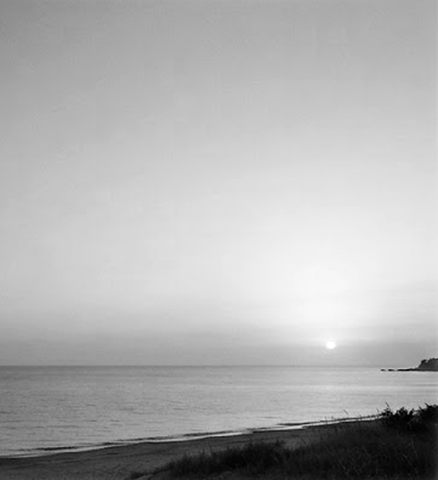
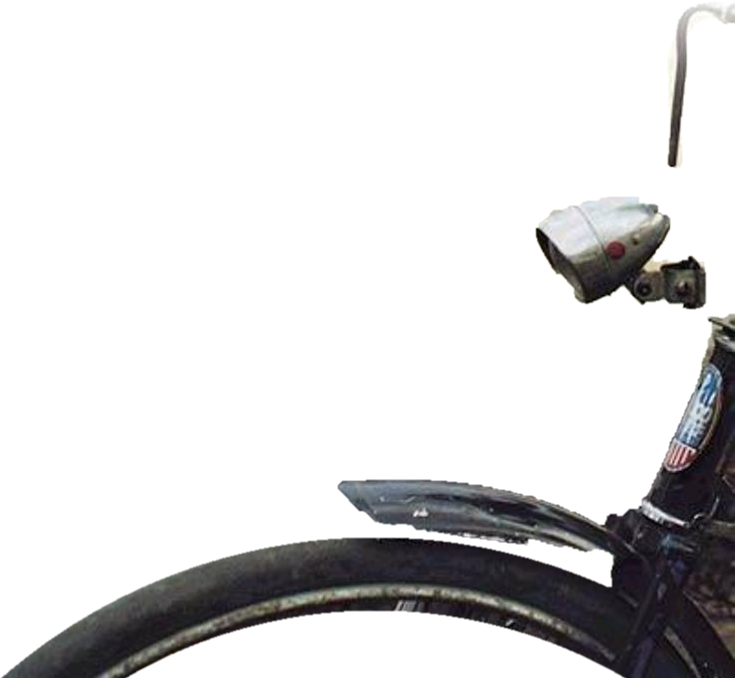
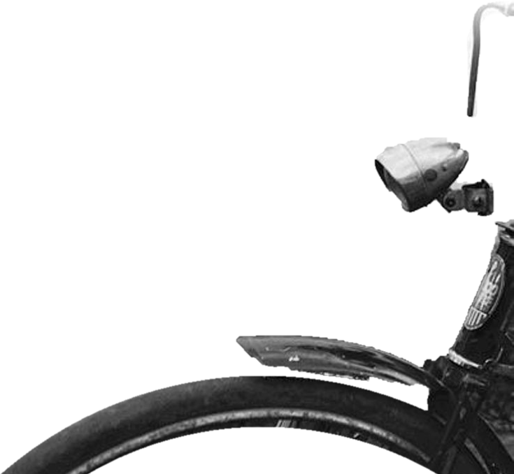
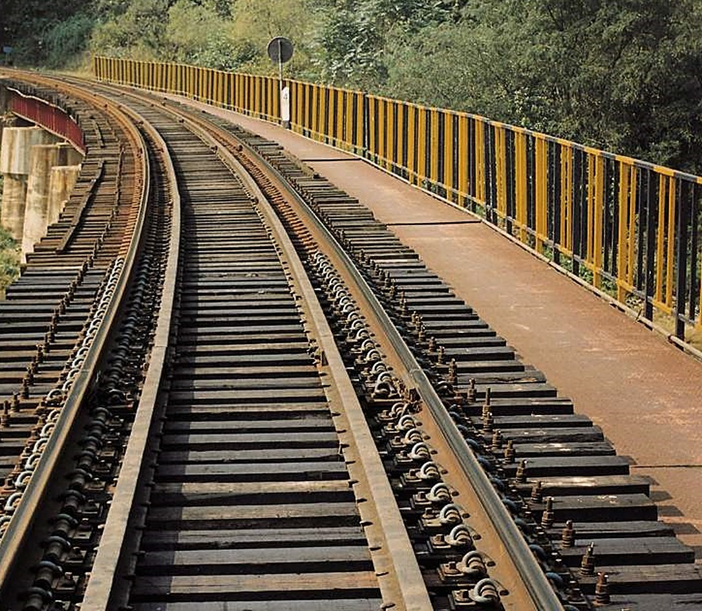
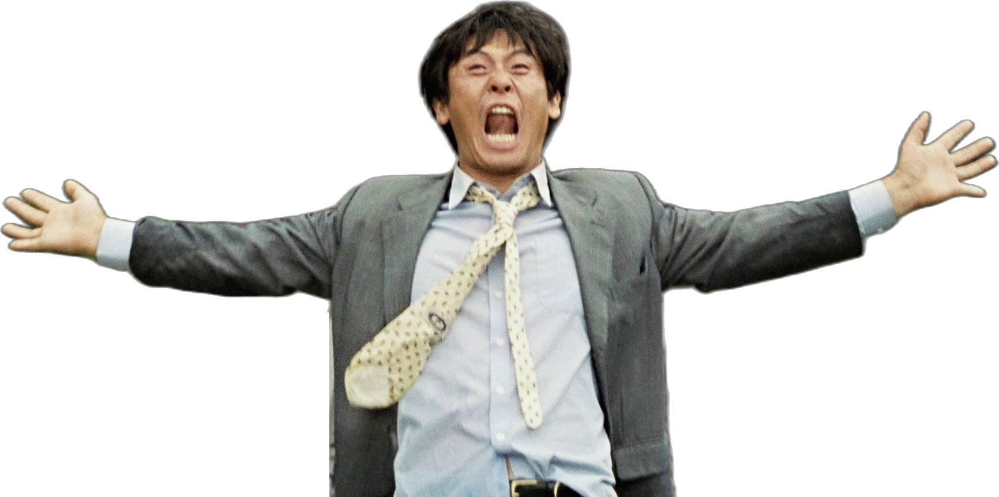
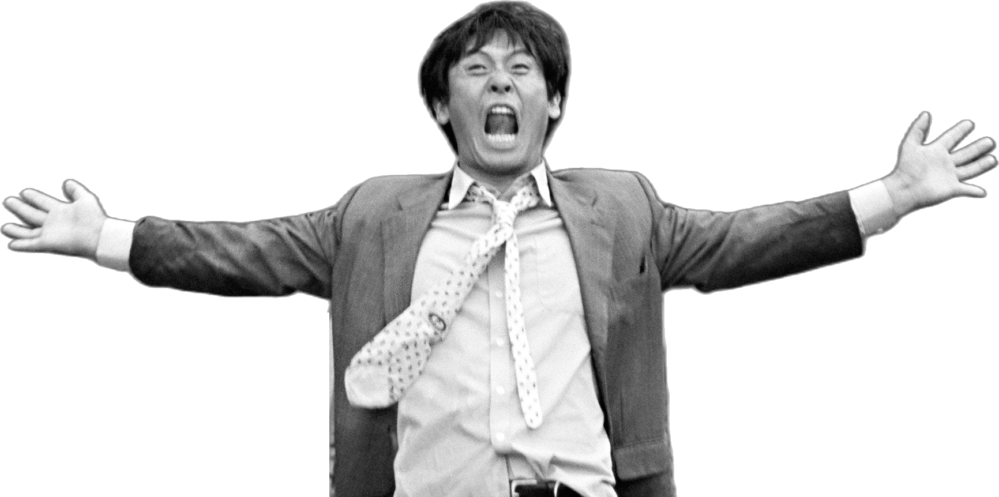
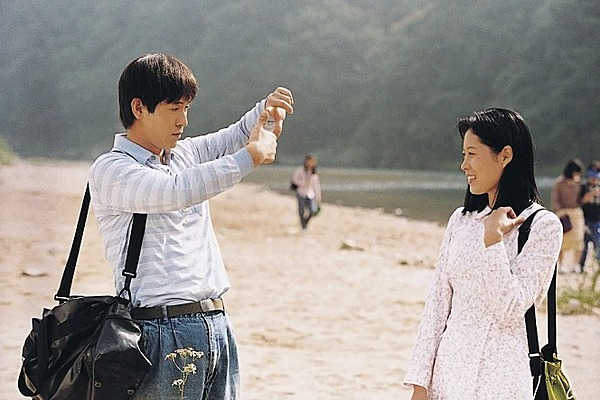
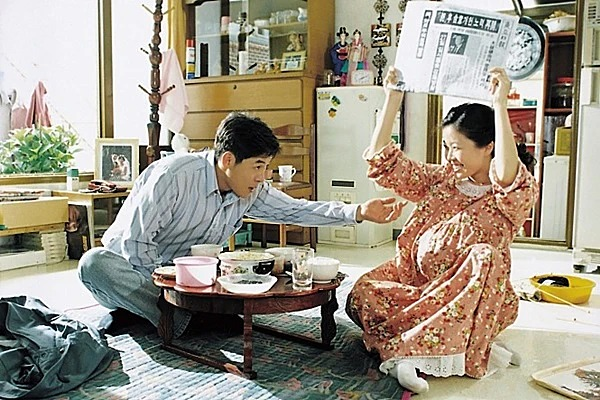
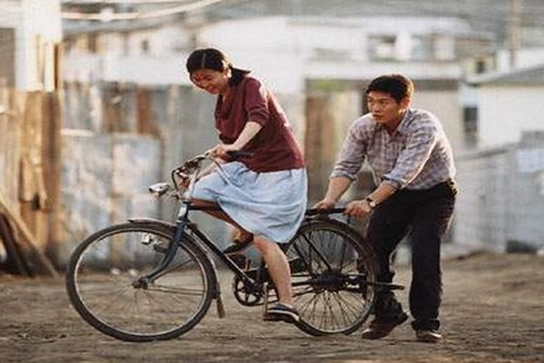

우리시대 최고의 영화... 자신있습니다.
2000
1979
0101
peppermint
candy
다시 시작하고 싶다!



나 다시 돌아갈래!
1999 야유회
1999 사진기
1994 삶은 아름답다
1987 고백
1984 기도
1980 면회
1979 소풍
명계남 > 기획 . 제작이창동 > 각본 . 감독
설경구 . 문소리 . 김여진제작 > 이스트필름공동제작 > NHK제공 > 유니코리아 . 드림 벤처 캐피탈배급 > 신도필름
박하사탕 (2000)
이창동 감독의 두번째 작품



1999년 봄, 마흔 살 영호는 ‘가리봉 봉우회’ 야유회에 허름한 행색으로
나타난다.
그곳은 20년 전 첫사랑 순임과 소풍을 왔던 곳.
직업도 가족도 모두 잃고, 삶의 막장에 다다른 영호는 철로 위에서 “나 다시
돌아갈래” 라고 절규한다.
영호의 절규는 기차의 기적소리를 뚫고, 시간을 거슬러 올라간다.
사흘 전 봄, 94년 여름, 87년 봄, 84년 가을, 80년 5월 그리고 마지막 79년
가을.
마침내, 영호는 스무 살 첫사랑 순임을 만난다.
제작 명계남, 마코토 우에다. 제작지원 최인기. 프로듀서 전재영, 전양준, 케이코 이노. 시나리오 이창동. 촬영감독 김형구. 조명감독 이강산. 편집 김현. 동시녹음 이승철. 미술 박일현. 음악 이재진. 분장 황현규. 의상 차선영. 소품 최승영. 세트 오상만. 특수효과 정도안. 사진 한미진. 현상 윤종두 . 녹음 라이브톤 . 조감독 김현진, 김영. 제작부장 김성진. 제작지휘 조민철. 홍보 임상희, 김수림. 광고디자인 김혜진. 광고사진 김우영. 예고편 MIC
www.peppermintcandy.co.kr